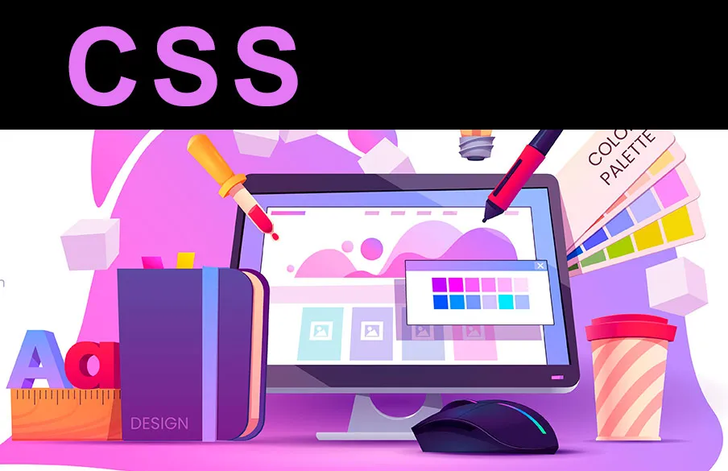
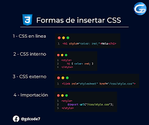
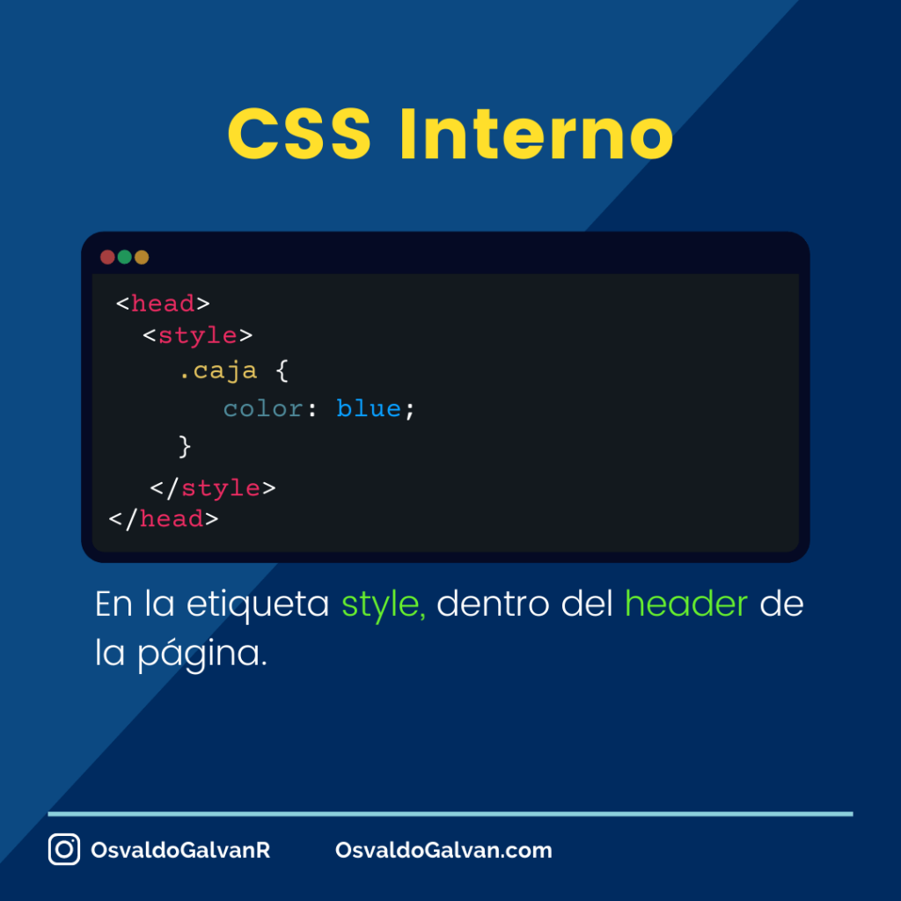
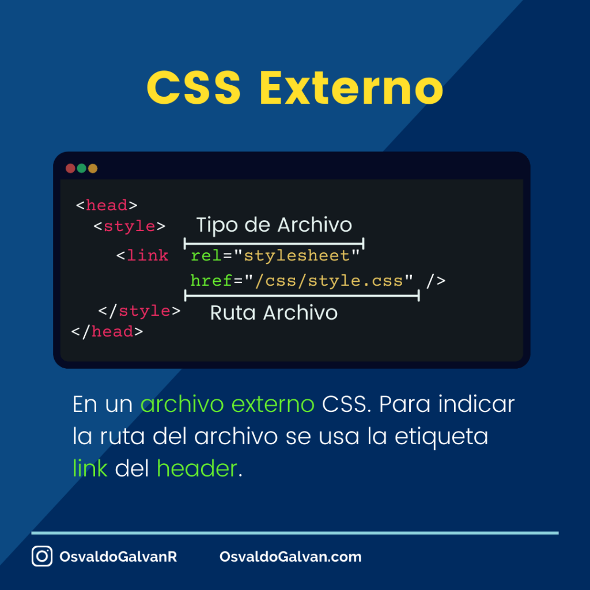

¿Qué es CSS?
CSS son las siglas de Hojas de Estilo en Cascada (Cascading Style Sheets), un lenguaje de diseño que se utiliza para controlar el aspecto visual de documentos web escritos en lenguajes de marcado como HTML. Mientras que el HTML proporciona la estructura y el contenido de una página, el CSS se encarga de su diseño, como el color, la fuente, el tamaño, la posición, los márgenes y otros efectos visuales.
¿Cómo utilizar CSS con HTML?

Puedes usar CSS con HTML de tres maneras principales: inline (directamente en la etiqueta HTML), interna (dentro de la etiqueta <style> en el <head>) o externa (vinculando un archivo .css externo). La forma más recomendada y organizada es la externa, que consiste en crear un archivo CSS separado y enlazarlo en la sección <head> del HTML con la etiqueta <link>. 1. Estilo externo (Recomendado) Es la práctica más común y organizada, ya que separa el contenido ( HTML) del estilo (CSS). Paso 1: Crea un archivo nuevo con la extensión css (por ejemplo, estilos.css) y escribe tus reglas CSS dentro. Paso 2: En el archivo HTML, dentro de la sección <head>, añade la etiqueta <link> para vincular el archivo CSS. html
CSS en linea
Como se puede ver, el estilo está incrustado en la propia etiqueta HTML, lo que ya proporciona algunas características interesantes y otras que no lo son tanto: Ventajas 💖 No requiere archivos adicionales: Se hace desde el mismo HTML 💖 Es cómodo desde Javascript: Usando .style.color se puede obtener o cambiar Desventajas 💔 Es fácil olvidar: Tienes que revisar el HTML para saber los estilos que aplica 💔 Es difícil reutilizar: Debes volverlo a escribir en otro .html 💔 No soporta pseudoclases ni pseudoelementos: Por ejemplo :hover o ::before 💔 No soporta reglas: media queries @media, @import o @font-face, entre otras 💔 Viola la regla de separación de responsabilidades: El HTML debe ser estructura y contenido 💔 Si necesitas sobreescribir un estilo, tienes que usar !important (o Javascript) 💔 Es poco legible si requerimos muchas propiedades 💔 Incrementa el tamaño del HTML
CSS ineterno
CSS Interno El CSS interno o incrustado requiere que añadas la etiqueta <style> en la sección <head> de tu documento HTML. Este estilo CSS es un método eficaz para dar estilo a una sola página. Sin embargo, utilizar este estilo para varias páginas requiere mucho tiempo, ya que es necesario poner reglas CSS en cada página de tu sitio web. A continuación te explicamos cómo puedes utilizar el CSS interno: Abre tu página HTML y localiza la etiqueta de apertura <head>. Pon el siguiente código justo después de la etiqueta <head>: <style type="text/css"> Añade las reglas CSS en una nueva línea. Aquí hay un ejemplo: body { background-color: blue; } h1 { color: red; padding: 60px; } Escribe la etiqueta de cierre: <style> Tu archivo HTML se verá así: <DOCTYPE html> <html> <head> <style> body { background-color: blue; } h1 { color: red; padding: 60px; } <style> <head> <body> <h1>Tutoriales de Hostinger<h1> <p>Esto es un párrafo<p> <body> <html> Ventajas del CSS Interno: Puedes utilizar selectores de clase e ID en esta hoja de estilo. Veamos un ejemplo: .class { propiedad1 : valor1; propiedad2 : valor2; propiedad3 : valor3; } #id { propiedad1 : valor1; propiedad2 : valor2; propiedad3 : valor3; } Como sólo añadirás el código dentro del mismo archivo HTML, no necesitas cargar varios archivos. Desventajas del CSS Interno: Añadir el código al documento HTML puede aumentar el tamaño de la página y el tiempo de carga.
CSS externo
El CSS externo es un archivo .css separado que contiene reglas de estilo para un sitio web completo, lo que permite mantener el código HTML limpio y facilita los cambios de diseño en múltiples páginas. Para usarlo, se incluye una etiqueta <link> en el <head> de cada página HTML para referenciar el archivo de estilo externo. Este enfoque es ideal para mantener la consistencia en un sitio grande y mejora las velocidades de carga, ya que el navegador puede almacenar en caché el archivo CSS. Cómo implementar el CSS externo Código <DOCTYPE html> <html> <head> <link rel> <stylesheet href> <style.css> <head> <body> <body> <html> Código Contenido del archivo <style.css> <body> { <font-family:> Arial, <sans-serif> } <h1> { color: navy; } Ventajas clave Mantenimiento eficiente: Al modificar el archivo .css externo, se actualiza todo el sitio web a la vez, en lugar de editar cada página individualmente. Organización: Separa el contenido (HTML) del diseño (CSS), haciendo que el código sea más limpio, ordenado y fácil de navegar. Consistencia: Asegura un diseño uniforme en todas las páginas del sitio web. Rendimiento: Las hojas de estilo externas permiten a los navegadores almacenar en caché los archivos CSS, lo que resulta en tiempos de carga más rápidos para las páginas subsecuentes. Consideraciones Tiempo de carga inicial: Es posible que los cambios de estilo no se vean hasta que el archivo CSS externo se haya descargado. Múltiples archivos: Si el proyecto es muy grande, subir demasiados archivos CSS puede aumentar el tiempo de carga.